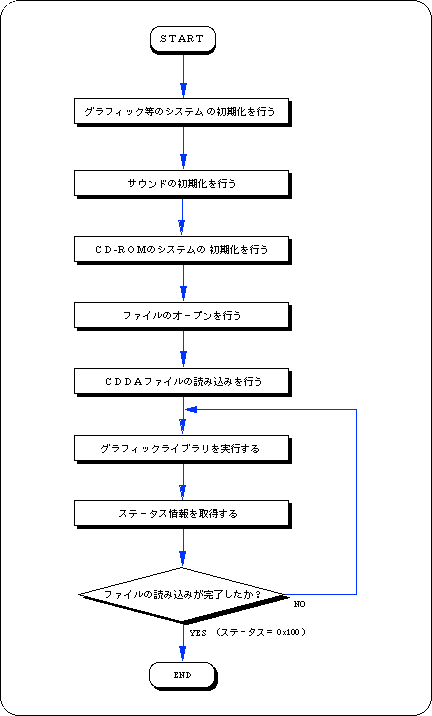
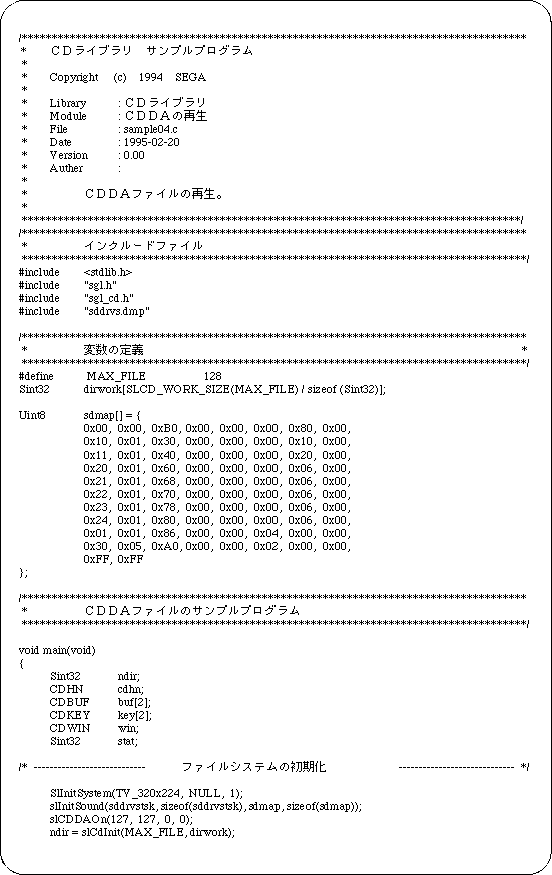
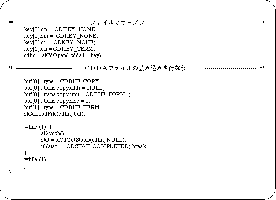

Return to previous page | Return to menu | Go to next page
CDDA file playback
To play a CDDA file, initialize the sound and use the functions “slCdOpen”, “slCdLoadFile”, “slCdGetStatus”.
- [Sint32 slCdLoadFile (CDHN cdhn, CDBUF buf []);]
- To play a CDDA file, specify as follows.
buf[ 0 ]. type = CDBUF_COPY;
buf[ 0 ]. trans.copy.addr = NULL;
buf[ 0 ]. trans.copy.unit = CDBUF_FORM1;
buf[ 0 ]. trans.copy.size = 0;
buf[ 1 ]. type = CDBUF_TERM;
Sample program 4 shows a CDDA file playback program example.
This sample program is a process for reading a CDDA file on a CD-ROM, and is an example of using a basic library for playing a CDDA file on a CD-ROM.
The procedure is described along Flow 12-4.
- Performs initialization of graphics and other systems.
- Performs sound initialization.
- Initializes the CD-ROM system.
- Opens a file.
There is key information for classifying data in the input parameter of the function that opens the file, but since this information is unnecessary, do not select it here.
- Play CDDA file.
The CDDA file is played using the file handle and read area information of the return value of the file open function as parameters.
- Executes the graphic library (function “slSynch ()”).
- Get status information and check if CDDA file playback is finished.
When playback ends, the loop ends.
Call the function “slSynch ()” in this loop.
Flow 12-4 Sample program 4 (CDDA file playback sample_cd4 / main.c)


List 12-4 Sample program 4 (CDDA file playback sample_cd4 / main.c) (continued)

Return to previous page | Return to menu | Go to next page